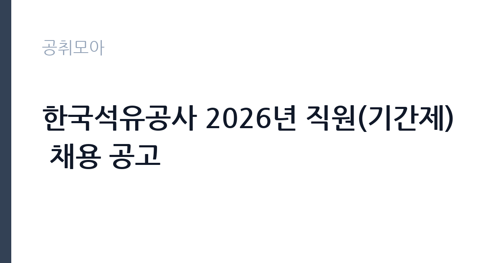

[공공기관] 한국석유공사 2026년 직원(기간제) 채용 공고
한국석유공사 · 울산 · 마감 2026-10-30 (D-15) · 출처 잡알리오

한눈에 보는 모집 조건
| 기관 | 한국석유공사 |
|---|---|
| 공고명 | 한국석유공사 2026년 직원(기간제) 채용 공고 |
| 고용형태 | 기간제 |
| 근무지 | 울산 |
| 게시일 | 2026-10-15 |
| 마감일 | 2026-10-30 (D-15) |
지원자격, 이렇게 읽으세요
- 공공기관 채용공시
- 세부 조건은 원문 공고문 확인
공통 지원자격은 연령 제한 없음과 학력 제한 없음으로 문이 넓습니다. 남성은 병역필 또는 면제자여야 하며 임용예정일부터 즉시 근무가 가능해야 합니다. 공사 인사규정의 결격사유에 해당하지 않아야 하고 대한민국 국적 보유가 조건입니다. 모집분야별로 자격증 등 추가 지원자격이 따로 있으니 본인이 노리는 분야의 자격 항목을 공고문에서 반드시 확인하시기 바랍니다.
이 공고의 포인트
이 공고의 매력은 에너지 공기업인 석유공사에서 일할 수 있는 기회라는 점입니다. 석유 비축과 탐사 개발이라는 국가 기간산업의 현장에 들어가는 경험은 이후 공기업 지원 때 경력으로 살릴 수 있습니다. 연령과 학력 제한이 없어 스펙보다 직무 적합으로 겨루는 구조이며 울산 본사와 여수, 거제, 평택 등 전국 사업장 근무로 지역 선택의 폭이 있습니다. 기간제라 정규직 전환을 보장하지는 않으니 계약 조건을 먼저 확인하시기 바랍니다.
전형은 어떻게 진행되나
접수는 10월 30일 마감이며 석유공사 채용 사이트에서 온라인으로 지원합니다. 전형 절차와 제출서류, 모집분야별 자격은 채용공고문을 반드시 확인하셔야 합니다. 공기업 기간제 전형은 서류와 면접 순으로 진행되는 경우가 많으며 분야에 따라 실기나 인성검사가 추가될 수 있습니다. 접수 마감이 다가오면 사이트 접속이 몰리므로 미리 지원서를 작성해 두시기 바랍니다.
원문에서 확인한 전형 방식
※ 다음의 내용에 관한 자세한 사항은 채용공고문을 반드시 확인하여 주시기 바랍니다. <공통 지원자격> ㅇ 연령 : 제한 없음(단, 임용예정일 기준 공사 인사규정에 따른 정년 이내인 자) ㅇ 학력 : 제한 없음 ㅇ 병역 : 남성의 경우 병역의무를 마친 자 또는 면제자 - 공사 인사규정 제9조(결격사유) 제8호에 따라 병역의 의무를 기피한 자는 제외 - 복무 중인 자의 경우, 임용예정일로부터 정상적으로 즉시 근무할 수 있는 자 ㅇ 기타 - 공사 인사규정 제9조의 결격사유에 해당하지 아니하는 자 - 임용예정일부터 정상적으로 즉시 근무할 수 있는 자 - 대한민국 국적을 보유한 자 <추가 지원자격> ㅇ 자격증 등 각 모집분야별 추가 지원자격은 채용공고문 참조
이런 분께 추천해요
- 에너지 공기업 현장 경험을 쌓고 싶은 분께 적합합니다.
- 연령과 학력 제한 없는 열린 채용을 찾는 분께 권합니다.
- 울산과 여수 등 사업장 지역 근무가 가능한 분께 잘 맞습니다.
지원 전 체크리스트
- 노리는 모집분야의 추가 지원자격을 공고문에서 확인했습니다.
- 병역과 국적, 결격사유 등 공통자격을 점검했습니다.
- 임용예정일부터 즉시 근무가 가능한 일정인지 확인했습니다.
- 채용 사이트에서 접수 마감을 앞두고 미리 지원서를 제출했습니다.
모집 일정과 제출 타이밍
공고 등록일은 10월 15일이며 접수 마감은 10월 30일입니다. 2주 남짓한 기간이므로 모집분야별 자격 확인과 서류 준비를 접수 첫 주에 마치시기 바랍니다. 전형별 세부 일정은 채용공고문의 일정표를 따르며 서류 발표 후 면접까지 텀이 짧을 수 있습니다. 임용예정일부터 즉시 근무가 조건이므로 합격 후 출근 일정도 미리 염두에 두시기 바랍니다.
직무 이해하기: 공공기관
석유공사 기간제 직무는 모집분야에 따라 비축시설 운영 지원과 사무 보조, 기술 현장 지원 등으로 나뉩니다. 비축기지에서는 시설 유지보수와 안전관리 보조가 중심이며 본사 사무 분야는 사업 지원과 자료 정리가 일상입니다. 에너지 공기업 특성상 안전 규정 준수가 모든 업무의 전제가 되므로 기초 안전교육을 성실히 이수하는 태도가 중요합니다. 계약직이지만 현업 부서와 협업하는 구조라 실무를 가까이서 배울 수 있습니다.
자기소개서 작성 팁
석유공사 지원 자기소개서에서는 에너지 안보와 석유 비축의 의미를 본인의 언어로 풀어내시면 좋습니다. 지원 분야의 직무기술서를 참고해 입사 후 수행할 업무를 구체적으로 적고 본인의 경험과 연결하시기 바랍니다. 공기업 특성상 안전 의식과 규정 준수, 협업 경험을 사례로 넣으시면 설득력이 생깁니다. 기간제 지원 동기에는 계약 기간 동안 이루고 싶은 실무 목표를 분명히 적으시기 바랍니다.
면접 준비 포인트
면접에서는 지원 분야의 기초 이해도를 묻습니다. 석유공사의 주요 사업인 탐사 개발과 비축, 유통구조 개선 중 지원 분야와 연결된 내용을 정리해 두시기 바랍니다. 안전 관련 질문에는 규정 준수 경험을 사례로 답하시면 좋습니다. 계약직 근무 조건과 근무지 수용 여부를 묻는 질문에는 현실적인 답변을 준비하시기 바랍니다.
급여·근무조건 읽는 법
이번 공고 요약에는 보수 금액이 공개되어 있지 않아 정확한 급여는 채용공고문에서 확인하셔야 합니다. 석유공사 기간제의 보수는 공사 보수규정에 따라 책정되며 분야와 경력에 따라 달라지므로 공고문의 보수 항목을 먼저 보시기 바랍니다. 참고로 공공기관 보수는 알리오 경영공시에 기관별 평균보수가 공개되니 석유공사의 공시 자료를 함께 보시면 판단에 도움이 됩니다. 출처 없는 연봉 수치는 기재하지 않으며 기본급과 수당의 구분, 실수령액은 원문과 기관 문의를 통해 확인하시기 바랍니다. 경쟁률과 합격선도 공개되지 않았습니다.
자주 묻는 질문
- 연령과 학력 제한이 정말 없나요?
공통 지원자격에 연령과 학력 제한 없음이 명시되어 있습니다. 다만 임용예정일 기준 정년 이내여야 하며 모집분야별 추가 자격은 따로 있으니 공고문에서 확인하시기 바랍니다. - 근무지는 어디인가요?
본사는 울산이며 여수와 서산, 거제, 평택, 구리, 용인, 곡성, 동해 등 전국 사업장이 있습니다. 모집분야별 근무지는 공고문에서 확인하시기 바랍니다. - 정규직 전환이 가능한가요?
기간제는 계약 기간이 정해진 고용형태로 정규직 전환이 보장되지 않습니다. 전환형 인턴이 아닌지 공고문의 고용형태 항목을 확인하시고 계약 조건을 받아들이고 지원하시기 바랍니다.
함께 보면 좋은 공고
[공공기관] 대한적십자사 재외동포지원본부 무기계약직 채용 공고 — 마감 2026-11-26[공공기관] 중소벤처기업진흥공단 안전관리실장(개방형 직위) 채용 공고 — 마감 2026-10-30[공공기관] [보훈교육연구원]일반기능직(시설기능/전기) 채용 — 마감 2026-10-30출처: 잡알리오 공개정보를 바탕으로 공취모아가 정리한 안내글입니다. 모집 조건·일정은 변경될 수 있으니 지원 전 반드시 원문 공고문을 확인하세요. 본 글은 정보 제공용이며 합격을 보장하지 않습니다.